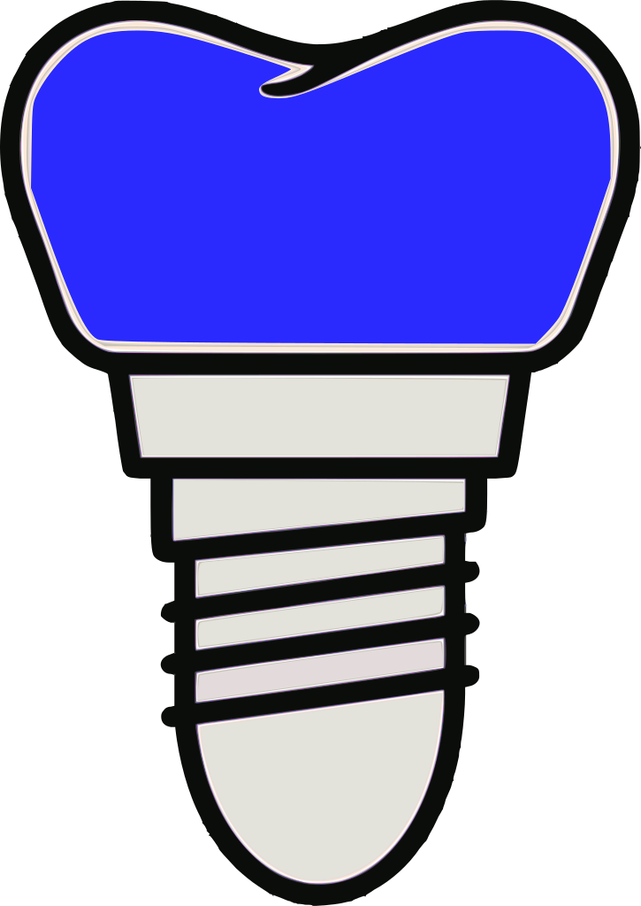
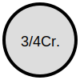

DLW
DIAG
PLN
REST
細
中
太
診断アイコン
健全歯
虫歯
二次カリエス
処置歯
歯牙破折
歯髄炎
急化Per
慢化Per
歯根破折
歯石
歯周病
ホープレス歯
欠損歯
DT
インプラント
治療計画アイコン
C処置
抜髄
RCT
抜歯

インプラント
修復物アイコン
CR
In
GIn
CADIn
P.In

3/4Cr.
4/5Cr.
FMCr.
GCr.
CADCr.
ZirCr.
MB
ZirPCr.
Br.
DT
インプラント